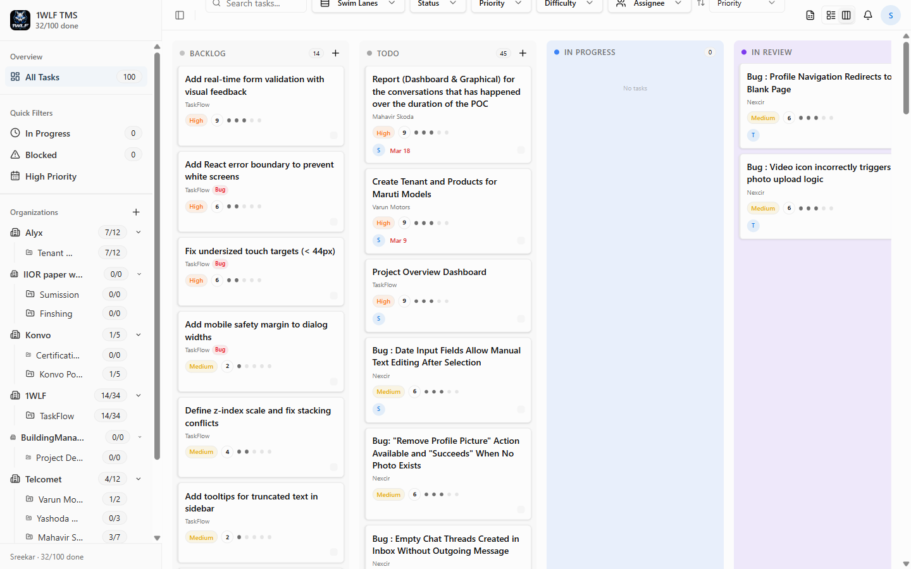
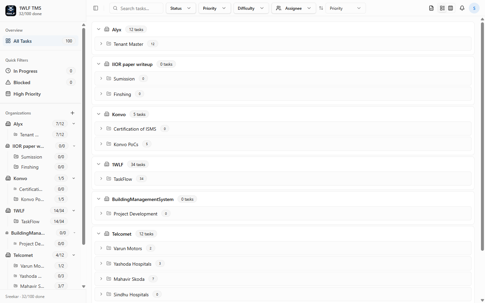
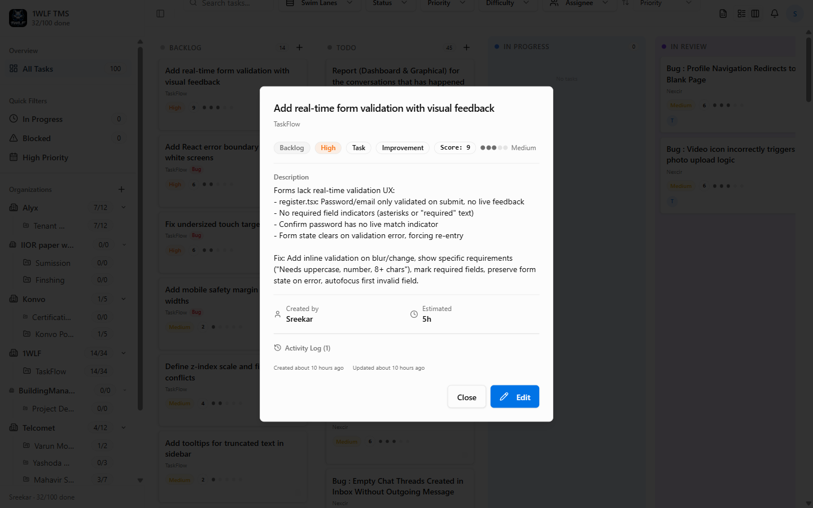
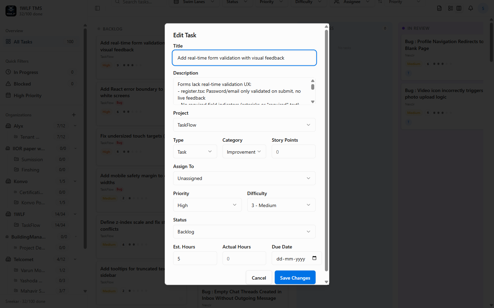
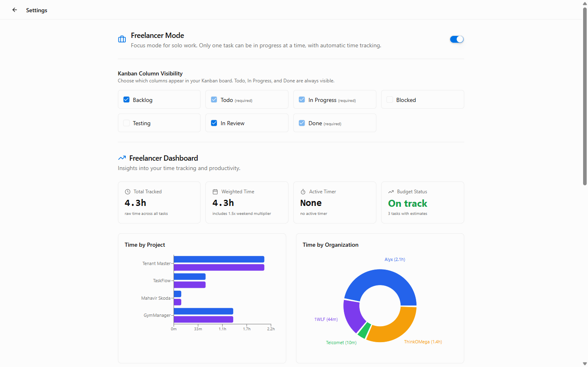
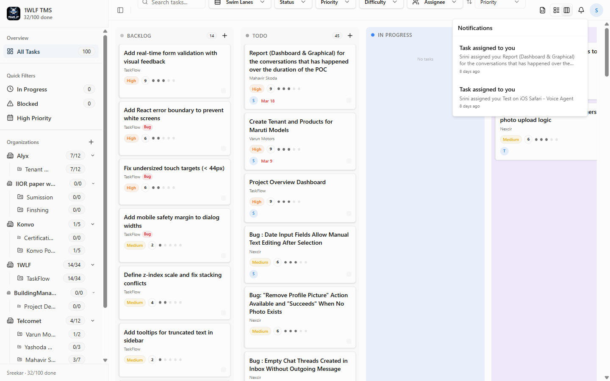
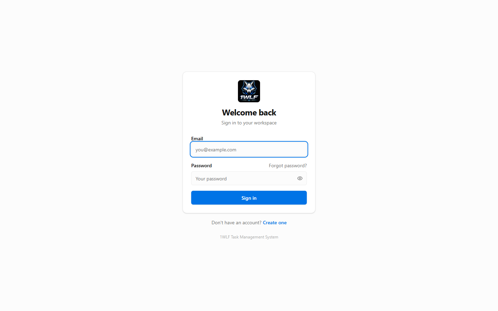

A full-stack, multi-tenant task management platform built for teams and freelancers. Kanban boards, hierarchical tasks, real-time updates, time tracking, and role-based access — all in one place.

From solo freelancers to multi-org enterprises — TMS adapts to how you work.
Create multiple organizations, each with their own projects, members, and isolated data. Role-based access at every level.
Title, description, type (task/story/feature), category, priority, difficulty (1–5), story points, estimated hours, due date, and assignee.
Break tasks into subtasks indefinitely. Parent-child relationships are preserved in both list and kanban views with cascade deletes.
Server-Sent Events push task changes (created, updated, deleted) live to all project members — no refresh needed.
Timers start and stop automatically as tasks move to/from "In Progress". Tracks weekday vs weekend time with a 1.5× weekend multiplier.
Assign tasks to testers, track testing history with notes and timestamps, then route completed work through In Review back to the owner.
Every field change is logged — status, priority, assignment, story points, category. Browse per-task or per-project audit history.
Get notified when assigned to a task, when your task status changes, when you receive a testing request, or when testing completes.
Visual time breakdowns by task, project, and organization. Bar charts and donut charts with estimated vs. actual time comparisons.
Export any project to CSV. Import tasks in bulk with automatic assignee resolution, parent task linking, and per-row error reporting.
Invite team members by email with 7-day expiring tokens. New users can sign up directly through the invitation link.
Filter by status, priority, difficulty, and assignee simultaneously. Sort by priority, due date, story points, or creation date.
Switch between Kanban swim lanes and a flat list view with a single click.
Drag-and-drop style kanban board with configurable swim lane grouping. Columns are individually toggled from settings — keep only the statuses you care about visible.

A collapsible tree view organized by Organization → Project → Tasks. See all your work across every org at a glance and drill into any project instantly.
Rich task metadata with a clean, focused editing experience.

Click any task to see its full detail: status, priority, type, category, difficulty score, description, creator, estimated time, and the complete activity log.

A comprehensive modal form covering every field. Assign to any org member, set priority, difficulty, story points, estimated hours, and due date in one place.
Route tasks through a dedicated testing stage with full history tracking.
Task created
and assigned
Timer starts
automatically
Assigned to
QA tester
Tester submits
notes & result
Owner reviews
and closes
Testing history with notes, timestamps, and tester names is stored on each task permanently.
Focus mode with automatic timers and a productivity dashboard.

Enable Freelancer Mode to enforce a single active task at a time. When a second task moves to "In Progress", the current one is automatically bumped back to "Todo" — keeping you focused.
Real-time in-app notifications for assignments, status changes, and testing requests.

A notification bell in the header shows unread count. Click to see a live-updating feed of everything that affects you — no email required.
Real screenshots from the live application — no mockups.

Two-tier RBAC — organization-level roles and project-level roles — with a clean hierarchy.
Organization Roles
Full control. Delete org, manage all members, all projects. Cannot be demoted or removed.
Manage members, create/delete projects, send invitations, bulk-set project access.
Create projects, manage tasks in their assigned projects, invite via explicit permission.
Read-only access. Can browse orgs, projects, and tasks but cannot make changes.
Project Roles
Full control of the project — tasks, members, settings.
Create, edit, and manage tasks within the project.
Assigned to testing tasks, can mark testing complete with notes.
Read-only access to project tasks and members.
Org Owners and Admins automatically have implicit access to all org projects — no explicit membership needed.
A full-stack monorepo with independent backend and frontend, ready for Docker deployment.
Every feature is powered by a clean, documented REST API. Interactive Swagger UI included.
Register, login, profile, password reset with 15-minute expiry tokens. User search scoped to organization.
Full CRUD for orgs, members, invitations, and project-access bulk updates. Stats endpoint for completion tracking.
Projects with status (active/archived), member management, and org-scoped filtering.
Paginated task listing, full CRUD, subtask management, testing assignment, audit log retrieval.
GET /events/{project_id} — live event stream for task_created, task_updated, task_deleted with 30-second keepalive.
Per-task time entries, batch totals, dashboard aggregates. Tracks actual and weighted time across orgs/projects.
Deploy TMS locally in minutes with Docker, or connect to the hosted API at apitms.1wlf.com.